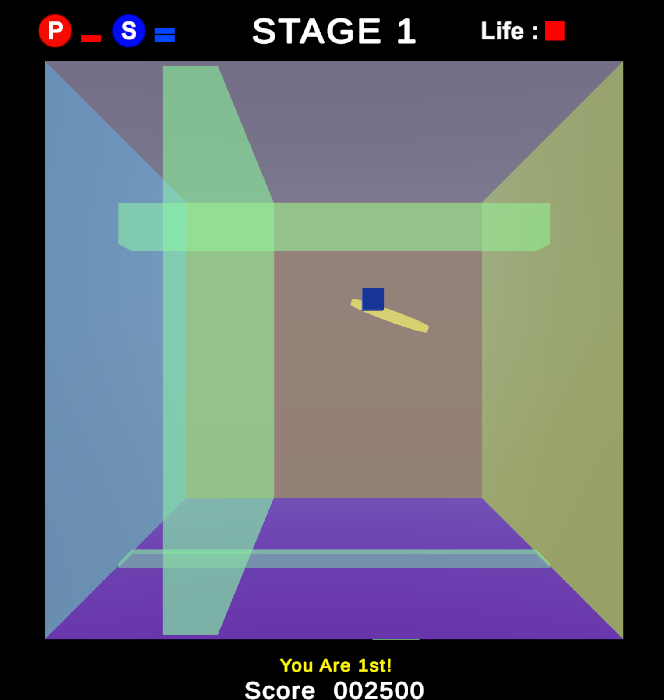

Project link: Flip Maze프로젝트 링크: Flip Maze

- Planned and designed the overall game systems.전반적인 시스템 설계 기획
- Implemented the game UI and enemy behaviour in Unity using C#.Unity에서 C#을 사용하여 게임 UI 개발 및 적 behaviour 개발
Genre: #3D #Casual #ObstacleDodging #Survival장르: #3D #캐주얼 #장애물 피하기 #오래 살아남기
Game overview:간단 게임 소개:
A line that seems impossible to pass in a 2D view can be avoided by rotating your viewpoint to the side.2D 화면에서 도저히 통과할 수 없을 것 같은 선도 시점을 옆으로 회전하면 피할 수 있습니다.
From above, it may even look like a dot.위에서 보면 점처럼 보이기도 합니다.
Rotate the viewpoint in the right direction to avoid obstacles approaching from every side.사방에서 다가오는 장애물을 피하려면 시점을 적절한 방향으로 회전해야 합니다.